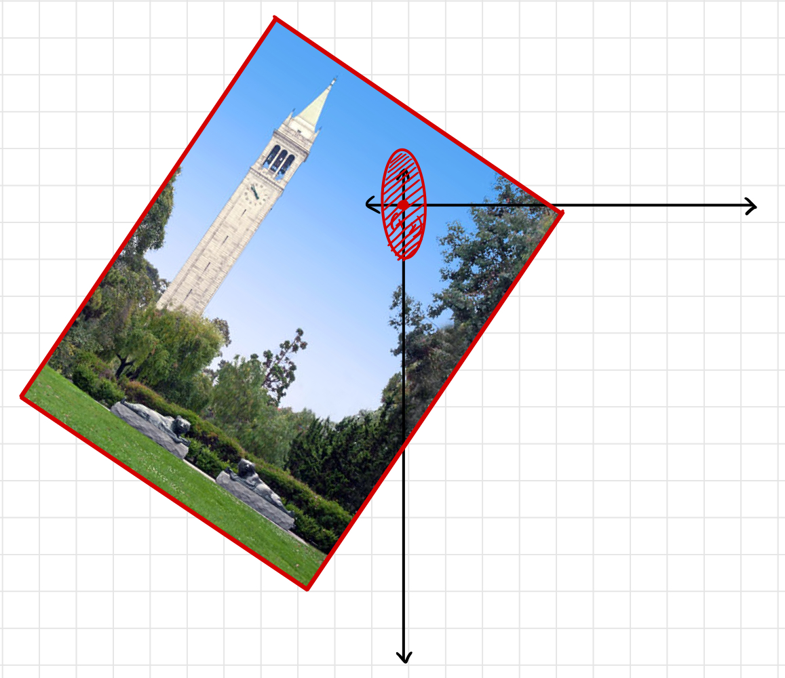
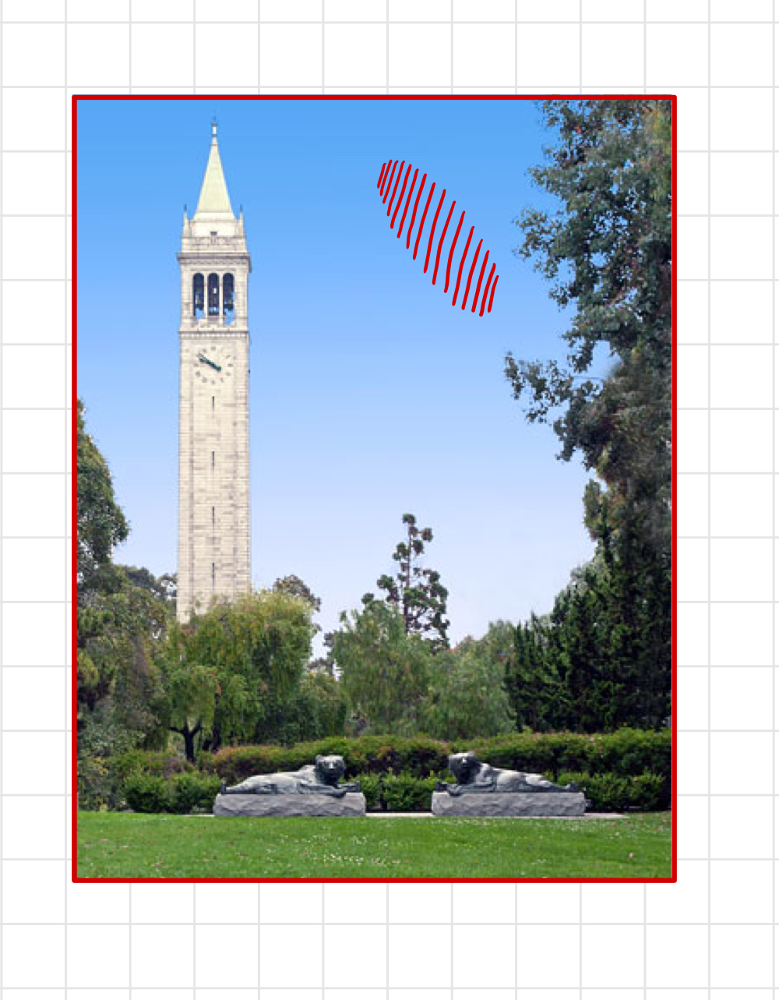
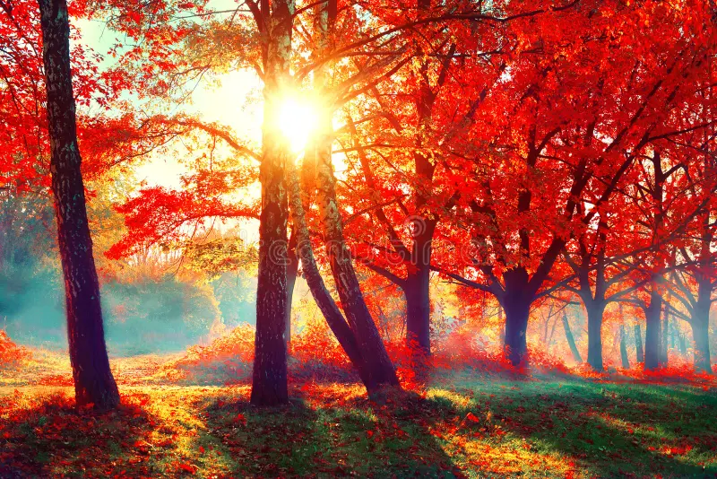
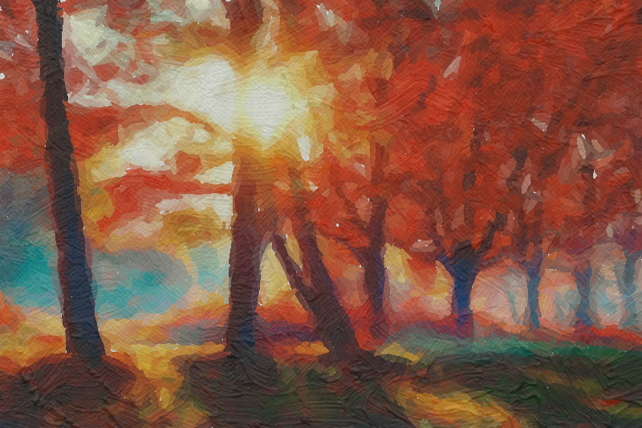
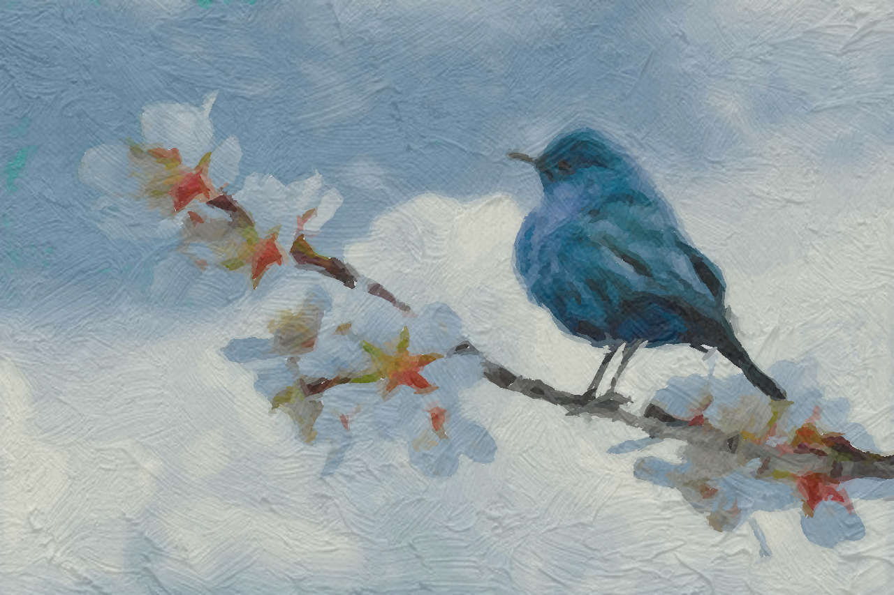

Monet-ification
Link to Webpage: https://swetha2022.github.io/monetification-website/184projectmilestone/
Link to Project Video Slides: https://docs.google.com/presentation/d/1A60O-lusOFJWJjtaC7iy3ZVPK37Pw2YcsaYU_26AQHw/edit?usp=sharing
Link to Project Video Recording: https://drive.google.com/file/d/1OMpukEdlFDMvbpen4X5DGznMRdn7cy19/view?usp=sharing
Abstract
Our system creates impressionist renderings of real-life photographs similar to Claude Monet's work. This is both an important and fascinating challenge as having the capability to reinterpret images with Monet's impressionist style bridges two eras together, introducing artistic styles of the past to newer generations and connecting contemporary life with historical art. When people reimagine their own photos in past styles, they gain a deeper appreciation for the art. It also empowers creativity and provides interactive experiences of digital art to users. Our implementation uses techniques covered in class such as rasterization, sampling, antialiasing, low/high pass filters, coordinate system transforms, color theory, texture mapping, barycentric coordinates, and linear interpolation. The key challenge of this project was generating these impressionist renders while maintaining the integrity of the image.
Starting Point: We started this project completely from scratch. The entire codebase was written from the ground up, and we did not use any pre-existing cs184 or online code templates. We wanted to start from first principles so that we could build the best system possible, without being biased towards already working code.What we Implemented: We implemented all aspects of this project ourselves. From a high level, we build the rendering system using pygame, created a baseline image render using ellipses as primitive shapes, and then optimized towards Monet's artistic style from then on. We also incorporated multi-threading to speed up rendering times ourselves! A more detailed technical explanation of these topics is below.
[INSERT BUNNY GIF]
Technical Approach
Initial Rendering Framework:
We developed the first version of our generative painting algorithm that reconstructs a reference image by iteratively adding ellipses to a blank canvas. We rely on a custom loss function that draws ellipses based on regions of the canvas that deviate most from a monet inspired function of target image. We measure this deviation using a mean squared error loss function that compares our in-progress canvas with a function of our input image:
|

|

|
Gradient Based Rendering:
To vary ellipse sizes based on local image detail, we implemented a Pointillism-inspired algorithm. The input image was first converted to grayscale and smoothed with a Gaussian blur (cv2.GaussianBlur) using a gradient_smoothing_radius. We then computed image gradients using cv2.Scharr to construct a vector field of color directions. Each candidate ellipse center was assigned a size and orientation based on local gradient magnitude and direction, scaled by a stroke_scale parameter.This approach ensures that areas with sharp transitions produce smaller, more detailed ellipses, while smoother regions use larger ellipses—preserving essential visual structure in the final rendering. As you can see in the next iteration of our render, ellipses in the sky tend to follow the orientation of the color gradient much more closely, and are almost all horizontal. However, looking at the tree, we notice that the ellipses follow the tree's color gradient which is largely vertical. This approach makes our images look closer to a painter's technique, where the artist paints brush strokes in the direction of that color in their subject.
Color Palette Optimization:
Our next step was to design a new color palette based on Monet's most frequently used pigments: Titanium White, Cadmium Yellow Light, Cadmium Yellow, Viridian Green, Emerald Green, French Ultramarine, Cobalt Blue, Madder Red, Vermillion, and Ivory Black. We obtained RGB values for each of these colors and stored them in a dictionary with the color names as keys. To simulate the effect of mixing colors in a physical palette, we generated intermediate hues by linearly interpolating between every pair of base colors using weights from np.linspace(0.05, 0.95, 19). This process produced a richer and more continuous range of blended colors. For each pixel in the original image, we computed soft similarity probabilities to each color in our expanded Monet palette. To ensure perceptual accuracy, we first converted both the original image colors and palette colors from RGB to the CIELAB color space—a perceptually uniform space—before computing Euclidean distances. These distances were then used to assign soft similarity weights. For each ellipse, we mapped the pixel colors within its region to their most probable Monet matches using this probability matrix. The color of the ellipse was then set to the average of these matched palette colors. We also modified our loss to be calculated as the sum of squared differences between the candidate canvas and a version of the reference image where each pixel has been replaced with its closest Monet-inspired color. This encourages the generated image to match the style and palette of Monet rather than the original image.
Realistic Brush Strokes:
To make the output resemble a painting more closely, we added realistic brush strokes to our render. We also implemented an algorithm to modify the original oil on canvas texture we obtained as a result of our milestone feedback. This involved first extracting areas with high-frequency content (i.e. edges) from the image we want to monet-ify. This was done by using OpenCV to compute horizontal and vertical gradients with cv2.Sobel, then combining them using linear interpolation with cv2.addWeighted, setting both alpha and beta to 0.5. This gave us a final image of all the edges in white on a black background, highlighting regions where we want brush strokes to be more pronounced. We then resized the oil texture image to match the dimensions of the edge image and blended the two using linear interpolation. For regions in the edge image that were entirely black, we filled them with a default RGB color of (200, 200, 200). The resulting texture was saved and used for brush stroke generation, ensuring that high-frequency areas in the image receive more detailed and dynamic strokes. Finally, our apply_canvas_texture function applies a subtle canvas-like texture to the input image by blending it with the texture image created. The texture is first resized to match the input image and converted to grayscale to avoid introducing color changes. Both the image and texture are converted to NumPy arrays to allow pixel-wise blending. The texture is then merged with the original image using a weighted average controlled by the strength parameter, which determines how prominent the texture appears. Finally, the result is clipped to valid pixel values and converted back to a PIL image. This technique gives the final image a natural, printed-on-canvas look without altering the original colors significantly.
Optimizations:
Our algorithm achieves significant performance improvements through three key optimizations. First, we implemented extensive vectorization using NumPy, replacing slow pixel-by-pixel operations with parallel array manipulations for tasks like ellipse mask creation. Second, we optimized color palette matching by using a kd-tree spatial index (cKDTree) in LAB color space, which dramatically accelerates finding the nearest Monet color for each pixel by reducing the complexity from O(n) to O(log n) while ensuring perceptually accurate color selection. Third, we leveraged multiprocessing with a worker pool to parallelize the most computationally expensive part of the algorithm—-evaluating multiple candidate brush strokes across multiple CPU cores simultaneously.
Results
|

|

|

|

|
References
{kind=link}
Team Member Contributions
Rohan:
Swetha: Swetha designed the Monet-inspired color palette by identifying Monet's key pigments (e.g., Titanium White, Cadmium Yellow, French Ultramarine) and converting them to RGB. She simulated natural blending by linearly interpolating between these colors and matched image pixels to palette colors using soft probabilities in the CIELAB space. She modified the model's loss function to accommodate this palette. To emulate Pointillism, she varied brush stroke sizes based on grayscale image gradients (computed with Gaussian blur and cv2.Scharr), using gradient magnitude and direction to guide stroke orientation and scale. She also aligned texture strokes to the image's frequency structure by detecting edges with cv2.Sobel, blending them with a resized oil texture, and filling gaps with a default color. This final texture guided stroke generation to reflect both Monet's style and the image's form.
Inas:
Mihir: Mihir started off this project by implementing the rendering framework using pygame and Pillow. This code created a blank canvas and ran a simulation to render n primitive ellipses to match our input image. This required writing the main display look that iteratively built the canvas by computed the loss from our monet-transformed reference image. Mihir then worked on rendering visualization and parameterized the code to save images with varying quality. For optimization, he worked on implementing the z-buffer system we used to ensure all parts of the image are painted over.